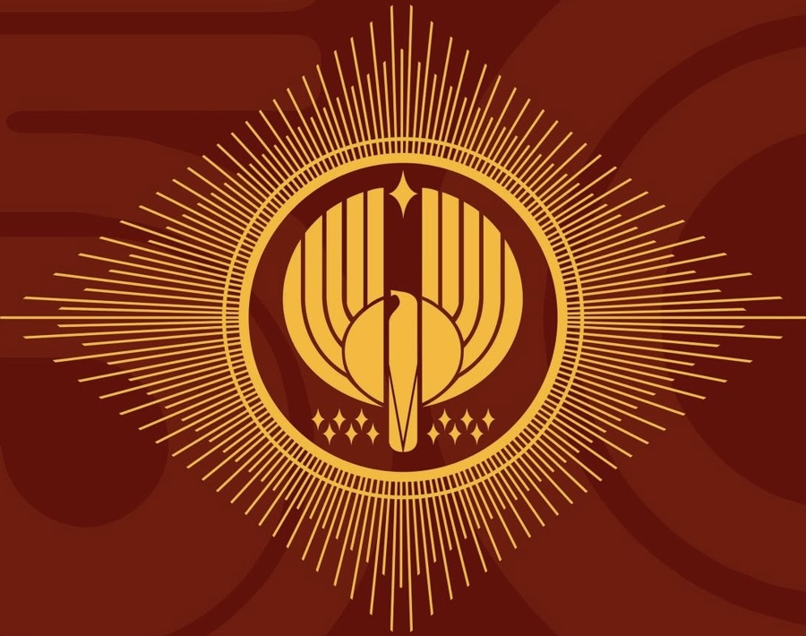
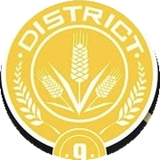
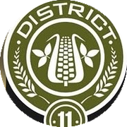

Panem is watching
Panem Archive
The 12 districts, the victors of the Hunger Games, and a playable 3D arena of the 50th Hunger Games — the Second Quarter Quell.
The 12 Districts
Produces luxury goods for the Capitol. A wealthy "Career" district that trains tributes for the Games.
Quarries, masonry and weapons; home of the Peacekeeper training. Another Career district.
Builds the electronics and machinery that Panem runs on.
Supplies fish and seafood. Often counted among the Career districts.
Generates the electricity that powers the nation.
Runs the trains and vehicles that move goods between districts.
Harvests the forests for lumber and paper.
Weaves cloth and makes clothing, including Peacekeeper uniforms.

Grows the grain that feeds much of Panem.
Raises the cattle and livestock.

Farms and orchards: the main source of Panem's crops.
Mines coal in the Appalachian region. One of the poorest districts.
Victors of the Hunger Games
Choose a Games to read its story. The 50th Games is fully playable.
10th Games

11th Games

34th Games

43rd Games

49th Games

50th Games
62nd Games

63rd Games

64th Games

65th Games

70th Games

71st Games

74th Games

75th Games
About the Hunger Games
The Hunger Games is a dystopian science-fiction series by American author Suzanne Collins. The first novel, The Hunger Games, was published in 2008, followed by Catching Fire (2009) and Mockingjay (2010).
The story is set in Panem, a nation made of the Capitol and twelve districts. Every year, one boy and one girl from each district are chosen to fight to the death in a televised arena. The original trilogy follows Katniss Everdeen, who volunteers to save her sister and becomes the symbol of a rebellion.
The books were adapted into four films by Lionsgate (2012–2015). Two prequels followed: The Ballad of Songbirds & Snakes (2020), set during the 10th Games, and Sunrise on the Reaping (2025), set during the 50th Games with Haymitch Abernathy.
How to play the 50th Games
Choose any of the 48 tributes, pick Easy, Medium or Hard, and enter the arena. Fight for weapons at the Cornucopia, survive the volcano and the toxic fog, and be the last tribute standing. Works with keyboard + mouse and on phones.